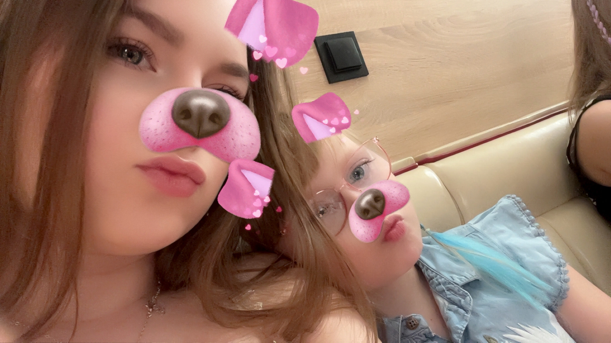
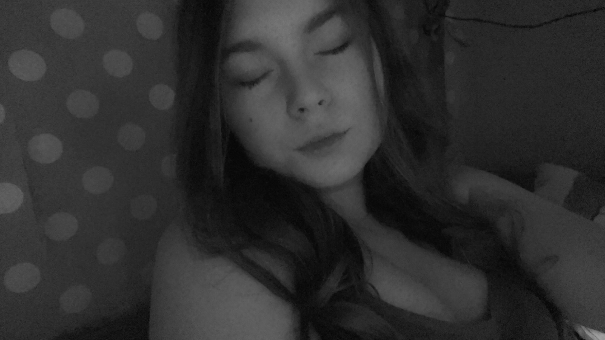
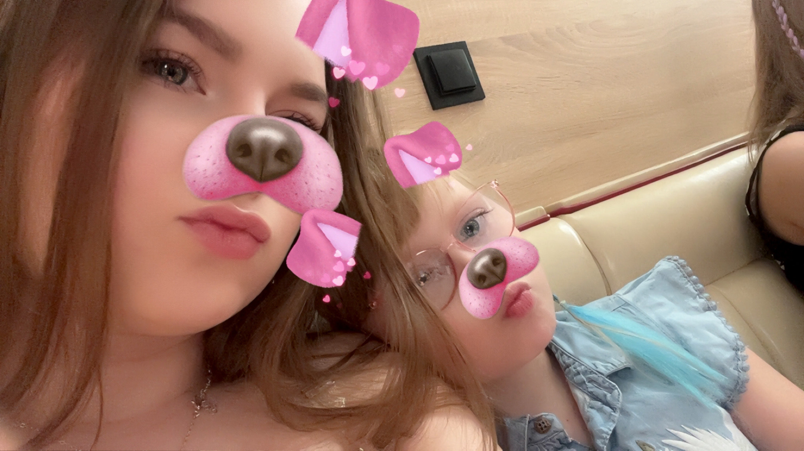
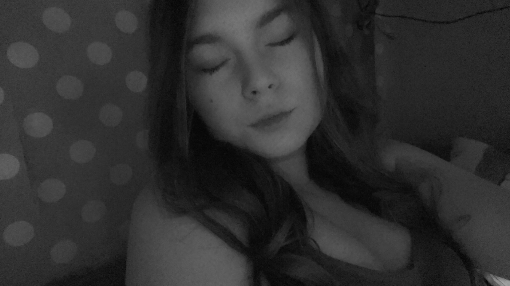

Nasza wspołna Przyszłość
Każdy moment jest wyjątkowy
Stworzenie tej strony bylo bardzo trudnym doświadczeniem dla mnie, musiałem nie jednokrotnie powstrzymywać łzy pisząc cały kod od podstaw, oraz próbując zebrac wszystkie najpiekniejsze mysli w jedną całość, ale koncząc swoja prace uważam - że było warto
Zobacz Galerię 



♥ Jak to się zaczęło?
Pierwsze spotkania
Z czegoś, co nie miało prawa się udać - przerodziło się to w coś wyjątkowego. Tamtego ciepłego wieczoru dwoje zakochanych spotkało się i na nowo splatało swoją przyszłość ze sobą. Żadne z nich nie podejrzewało, że bedzie to początek czegoś niesamowicie wielkiego, początek nowych wypisanych wspomnień, wspólnych przeżyć, spędzonych chwil, nieprzespanych nocy, Był to niejednoznaczny początek wielkiej zabóczej miłości, pogoni za kilometrami drogi, do obcych miast, gdzie tych dwóch mogli nareszcie siebie dotknąć po latach obcej rozłąki - Ta Krótka Historia maluje nasz wspólny wizerunek Nikola - Ciebie I Mnie, Ty i ja i nikt pomiedzy nami.
Pisząc wszystkie te podskrypcje w mojej glowie przelatuja wszystkie nasze wspolne wspomnienia oraz maluje sie mi sie nasza szczęśliwa przyszłość, przyszłość którą chce dzielic właśnie z toba
Nasza wspólna podróż ♥
Pierwsze spotkania
29 Września, w dniu w którym pokonaliśmy naszą najwiekszą bariere, Akceptacje. Była to właśnie ta chwila w której zostaliśmy zaakceptowani przez otaczającą nas rzeczywistość, wszystko nabrało tych jaskrawych kolorów - zbliżyliśmy sie do siebie jeszcze bardziej, jeszcze szybciej. Staliśmy się dla siebie miłą codziennością, Zostaliśmy wtedy na nowo powiązani tą czerwoną Liną, która uwiązała nasze serca wokół Siebie,
Chce Ci powiedziec jedno - Kocham Ciebie, Kocham Cie Nikola, za wszystkie spedzone romantyczne chwile, za nabarwienie mojego życia jeszcze bardziej, Kocham każdą Chwile Którą spedzam z toba, gdy słysze twój Śmiech, twoj cudowny głos, twoje myśli. Każdego dnia czuje wewnetrzny spokój, bo po mimo dzieli nas spora odległość, to wiem ze za nią wciąż czeka ta dziewczyna która rozpaliła moje życie na nowo
♥ Nasze wspomnienia
Każdy moment razem jest wyjątkowy
To coś wiecej niż Spedzony razem czas, to opowieść o Chłopaku i Dziewczynie którzy stawili czoła brutalnemu Światu nie wiedząc nawet co czeka ich w niedalekiej przyszłośći, pokonaliśmy wiele tłumnych przeszkód aby finalnie być razem, żyć w szczesciu i nieszczesciu w zdrowiu i chorobie. Chce Ci dziś powiedzieć "Kocham Cie" - Kocham Cie za to Kim jesteś i kim w niedalekiej przyszłości dla mnie zostaniesz, zostaniesz najbliższą oraz najczulszą osobą jaką kiedykolwiek mógłbym sobie wymarzyć
Nasze Marzenia
Rodzą sie nagle
Na każdym z Tych zdjęć Kryje sie historia, oraz uczucia których nie da sie opisać pisząc to po dziś dzien czuje w sobie te same uczucia gdy pierwszy raz zobaczylismy sie na oczy - Chce Cie poślubić Nikola, Chce byś została któregoś dnia moją Żoną, Chce abyś któregoś dnia powiedziała - TAK. tak proste słowo a otworzy ono nastepny rozdział w naszym życiu, zaplącze nas na wieki i jeszcze dłużej i jeszcze dalej, Kocham Cie od stóp po sam czubek głowy, kocham w tobie wszystko, każdą Chwile każde sekunde z tobą, Nie chce Niczego wiecej tylko Ciebie.
Przeżyliśmy wiele trudnych, cieżkich chwil rozłąki, tylko po to aby na nowo sie pojednać i związać na wieki, Nie jestem w stanie opisać tych uczuć tego gdy rano wstaje i czytam od CIebie kolejną wiadomość przepełnioną serduszkami oraz miłością, To naprawde jest czułe oraz rozpala moje serce na kolejny dzień, Kocham słuchać gdy opowiadasz mi cały swój dzień ze swoją energia - podkreślając nawet te najmniejsze szczegóły które w normalnym świetle nie są aż tak istotne. Twoje Haule zakupowe oraz prezentacje z rzeczy które sprawiają Ci najwieksza radość, twoje Chwile wygłupów do kamery byle by poczuć tą bliskość - To wszystko tak bardzo mnie koloruje, Nikt nigdy nie dokonał tego co ty doknałaś, Nikt nie roztopił mnie tak bardzo jak ty Nikola, Kocham Cie

Przyszłość przed nami
Maluje sie nowymi barwami
Przed moimi oczami kreuje sie wiele scenariuszy co spotka nas w przyszłości, tak naprawde sam nie wiem gdzie bede za kilka lat, gdzie bedziesz ty, gdzie bedziemy MY. Ale w każdym z tych scenariuszy widze ciebie przed ołtarzem ze łzami w oczach w białej sukni ślubnej, Kocham Cie i czuje że chce naprawde spedzić z tobą reszte życia, To Ty nauczyłaś mnie kochać i byc kochanym to ty pokazałaś mi jak to jest znowu żyć w kolorowych barwach, to Ty zostaniesz własnie moją Żoną